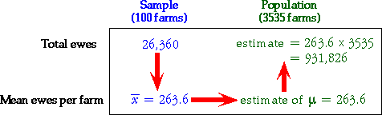
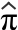
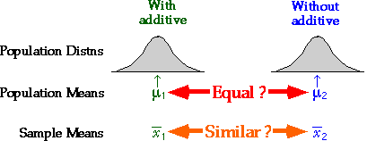

Ewes per farm in region
An official from the Ministry of Agriculture wants to estimate the average number of ewes in a region's farms that are available for lambing in the spring. The official knows that there are 3,535 farms in the region but collecting information from all farms would be very expensive, so data are collected from a random sample of 100 farms.
The sample mean number of ewes per farm,  ,
is an estimate of the unknown population mean, µ.
,
is an estimate of the unknown population mean, µ.
There was a total of 26,360 ewes in the 100 sampled farms, so the mean number of ewes per farm was 263.6. We estimate the average number of ewes per farm in the whole region to be
=  = 263.6 ewes
= 263.6 ewes
Note: A 'hat' is often drawn over a parameter to denote an estimate of it.
Total number of ewes in region
The sample data can also be used to estimate the total number of ewes in the region. We estimate the total for all 3,535 farms in the region to be
263.6 × 3,535 = 931,826 ewes
The diagram below illustrates the process.

HIV infection rates
Researchers in the late 1980s were interested in the HIV infection rates of homosexual men in the USA and collected data from a sample of 4,955 homosexual men in Baltimore, Chicago, Los Angeles and Pittsburgh.
The sample proportion, p, of homosexual men with HIV is an estimate of the unknown population proportion, π.
It was found that 1,883 out of the 4,955 sampled homosexual men were infected with the HIV virus, so our estimate of the proportion infected out of all homosexual men in these four cities is
 = p = 1883/4955 = 0.380
Comparing beers
A brewery wishes to assess the effect of an additive on the alcohol content of its premium beer. Several batches are brewed, both with and without the additive, and the alcohol content of each batch is recorded. We therefore have two random samples; one from a hypothetical population of alcohol contents of batches brewed with the additive, and the other from the corresponding hypothetical population without the additive.
We could estimate the two population distributions and attempt to compare them. However the brewer's interest is mostly about whether the alcohol content increases or decreases with the additive, and this can be phrased in terms of the two population means — are they different?

The sample means provide estimates of the corresponding population means and are the basis for answering the question.
The difference in sample means is an estimate of the difference between the unknown population means.